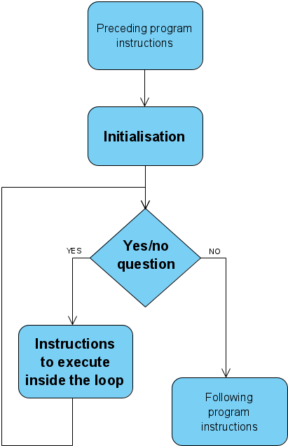
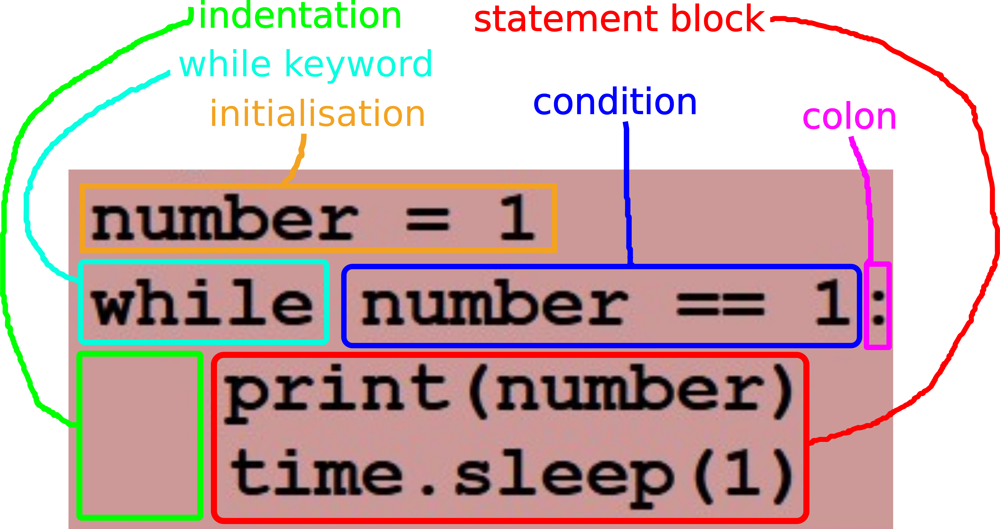

-
What is a loop in programming?
What is a loop in programming?
The flowchart of a generic loop in a computer program 
The loop is one of the three essential ingredients needed for expressing algorithms:
- assignments
- conditional statements
- loops
A loop is used when the same instructions need to be iterated (repeated several times):
- to improve the development process (speed, readability and maintainability)
- to optimise the program (smaller code size)
- to make use of the processing power of a computer (i.e. get things done on a scale that humans cannot achieve)
- to allow the program to be written at all:
- the number of iterations may not be known in advance if it depends on environment communication or is random
- if the program represents a 'server' (runs infinitely)
-
The while loop in Python
The while loop in Python
The main function of a loop is to repeat some group of instructions over and over again. The loop in code snippet ? does exactly that: it prints out the number 1 over and over again. The condition is number == 1 and in this context always true. The call to time.sleep() has been added to space the iterations by 1 second, to avoid looping at a speed that hogs the CPU and freezes the computer running it. Once running, this little program will have to be stopped externally (Ctrl-C on the command line or stop button in PyCharm).
Example of an infinite while loop in Python import time number = 1 while number == 1: print(number) time.sleep(1)
Relating a Python while loop to the generic flowchart 
The syntax of a Python while loop 
-
Designing the loop
Designing the loop
There are several things that must be decided upon when designing a while loop:
- What it is that is done in the loop's iteration
- What data are different in each iteration and how (including initial value)
- What condition needs to be met for an iteration to take place (for the loop to keep going)
Let us look at a few examples.
Example 1 - Printing numbers from 1 to 10
- A number is printed
- The number must change in each iteration, starting with 1 and ending with 10
- The number must be greater than or equal to 1 and less than or equal to 10
Loop example 1 # we need a variable to represent the number (number) number = 1 # (2) number starting value while number <= 10: # (3) no number >= 1 check as definitely true print(number) # (1) the purpose of the iteration number += 1 # (2) preparing the value of number for the next iterationExample 2 - Printing ':-)' n times
- A smiley face is printed
- The functionality does not change iteration to iteration, however, we do have to count the iterations and so the count changes
- The count must be between 1 and n, inclusive
Loop example 2 # we need variables to represent the iteration count (count) and the value n (we use n) n = 7 # n should have a value beforehand (this is not part of the loop) count = 1 # (2) let count be 1 for the first iteration while count <= n: # (3) no count >= 1 check as definitely true print(':-)') # (1) the purpose of the iteration number += 1 # (2) preparing the value of count for the next iteration
Example 3 - Adding up numbers entered by the user, with non-number string as end signal
- The number entered by the user is added to a total
- It is the value entered by the user that changes, otherwise the functionality is the same
- The value entered by the user must be a number
Loop example 3 # we need a variable to hold the entered value (value) and one for the sum (sum) sum = 0 # (1) before entering the loop the sum is 0 value = input("Number? ") # (2) get the value for the first iteration while value.isNumeric(): # (3) check if the entered value has only numeric characters sum += int(value) # (1) the iteration functionality value = input("Number? ") # (2) preparing the value of count for the next iteration print(f"Sum is {sum}") # printing the sum (not part of the loop)
The value signalling that the loop should end (in this case a non-numeric value) is called a sentinel value.
Use the approach taken in the previous examples to complete the following in-class exercises.
Write a Python script that produces the output below. Use a while loop to print the lines between the first and the last one.
********** * * * * * * * * **********
Write a Python script that:
- generates a random number between 1 and 10 (inclusive) and stores it in a variable called iterationCount
- prints out the number 1 iterationCount times using a while loop
Write a Python script that generates random numbers between 1 and 11 (inclusive) and prints them out, except if the number is 11, in which case the program exits.
Write a Python script that reads in some text input by the user, then prints out the characters of the text, each on a separate line and preceded by its 1-based index.
-
Using a dummy check
Using a dummy check
Let us look at another example of a loop. It's purpose is to allow a user to log in, with 6 wrong passwords allowed before the user is locked out.
Log-in loop # the password abcde, is stored in hashed form (not part of the loop) storedHash = hash("abcde") attempt = 1 # pwd = input("Please enter your password: ") # --> initialisation hashed = hash(pwd) # while hashed != storedHash and attempt < 6: attempt += 1 # pwd = input("Please enter your password: ") # --> loop statement block hashed = hash(pwd) #If we carefully look at the code, we can see that the initialisation is practically identical to the iteration block. It would be good if this code did not have to be repeated and the initialisation could run as the first iteration. We can achieve this if we set up the tested variables so that the condition is guaranteed to be true the first time it is evaluated, like in the following code snippet.
Log-in loop with dummy check # the password abcde, is stored in hashed form (not part of the loop) storedHash = hash("abcde") attempt = 0 hashed = hash("") while hashed != storedHash and attempt < 6: attempt += 1 pwd = input("Please enter your password: ") hashed = hash(pwd)The code above is tidier, without the unnecessary repetition. The 'dummy check' (guaranteed to be true) is set up with attempt = 0 (a value that does not count an attempt and is less than 6) and hashed = hash("") (the hash value of the empty string password, which will never be the real password as in a real system it would not be allowed).
Some things to note about the dummy check:
- It works only if part of the initialisation code is identical to the iteration code.
- While improving readability by removing the need for code repetition, it simultaneously reduces it by introducing code devoid of meaning in the application domain. Thus using it is not always the 'right' thing to do. You must decide whether it provides a net improvement or not.
- Some programming languages provide a do-while construct that executes the loop and then performs the check, which matches this scenario perfectly, but Python does not.
Rewrite the following code so that the loop uses a dummy check. We assume that the user is cooperative.
print("---------- EXPENSES ----------") expenses = 0 receipt_value = int(input("Enter the receipt value: ")) expenses += receipt_value has_another = input("Do you have another receipt (y/n)? ") while has_another == 'y': receipt_value = int(input("Enter the receipt value: ")) expenses += receipt_value has_another = input("Do you have another receipt (y/n)? ") print(f"Total expenses: {expenses}") -
Loop constructs break, continue and else
Loop constructs break, continue and else
The keywords break, continue and else are used in Python for some additional constructs that can be used with the while loop.
- break makes the flow of execution 'escape' the while loop and resume from the first instruction outside the loop
- continue makes the flow of execution 'escape' the current iteration and resume at condition checking for the subsequent iteration
- else follows the loop immediately and contains a statement block to be executed after the while loop, but only if it did not come to an end due to a break instruction
-
break
break
Example with one condition
In the following example the initialisation code is repeated as the second part of the loop statement block.
Example of a while loop implementing a loop with condition naturally ocurring mid-block functionValueList = [] print("Please enter a positive whole number") # print("or any other value to conclude: ") # --> initialisation numberString = input() # while numberString.isnumeric(): # --> check number = int(numberString) functionValue = number**2 + 3 * number + 4 functionValueList.append(functionValue) print("Please enter a positive whole number") # print("or any other value to conclude: ") # --> statement block latter part numberString = input() # print(functionValueList)In the case of a loop like this, the break construct can be used to avoid this repetition and implement a loop that matches directly what is going on. In this case:
- The while-loop condition is simply True.
- The latter part of the loop statement block is moved to the beginning of the loop statement block.
- The opposite of the actual exit condition is checked with an if statement in the middle of the loop statement block.
- The exit effected with the break statement if the condition above is true.
In code snippet ?, code snippet ? is rewritten to make use of this approach.
Using the break construct for mid-block exit from iteration functionValueList = [] while True: print("Please enter a positive whole number") print("or any other value to conclude: ") numberString = input() if not numberString.isnumeric(): # --> check break # --> exit if condition False number = int(numberString) # functionValue = number**2 + 3 * number + 4 # --> statement block latter part functionValueList.append(functionValue) # print(functionValueList)Rewrite the following code so that the duplicate code in the initialisation is removed. Use the break construct. You can assume that the user is cooperative.
print("---------- SENTENCES ----------") sentences = [] sentence = input("Enter a sentence or '.' to end: ") while sentence != '.': sentences += [ sentence ] sentence = input("Enter a sentence or '.' to end: ") print(f"Your sentences: \n{'\n'.join(sentences)}")Example with more than one condition
Sometimes a loop has multiple exit conditions that must be checked at different points in the iteration or are associated with different actions. In this case we can use multiple checks, one of which can be the while condition itself.
The following example has a while condition check and a check + break within the loop.
Loop including multiple exit conditions pwdHash = hash("abcde") attempt = 1 pwd = input("Please enter your password: ") hashed = hash(pwd) while hashed != pwdHash: print("Password incorrect.") if attempt == 6: print("You have run out of tries. Contact IT support.") break pwd = input("Password incorrect. Please try again: ") hashed = hash(pwd) -
else
else
In code snippet ?, it would be nice to inform the user when they are successfully logged in. One way would be to write code following the loop that checks the value of attempt and prints a message if this has not reached 6. However, Python provides a mechanism to run some code after the loop ends, only when it ended due to the while condition being false: the else] clause of the while construct.
Code snippet ? is identical to ?, except for the else clause at the end. This includes code that is to run only if the loop exited due to hashed != pwdHash being false (i.e. the password being correct).
Using else pwdHash = hash("abcde") attempt = 1 pwd = input("Please enter your password: ") hashed = hash(pwd) while hashed != pwdHash: print("Password incorrect.") if attempt == 6: print("You have run out of tries. Contact IT support.") break pwd = input("Password incorrect. Please try again: ") hashed = hash(pwd) else: print("You are now logged in.")Write a while loop with break and else statements that reads words input by the user and prints out the list of collected words at the end. Do not add a word to the list if it contains non-alphabetic characters. Use sentinel values:
- full stop (.) to signal the end of input
- three dashes (---) for cancelling the entire process
-
continue
continue
Let's say we want to print out all the numbers from 1 to 100, leaving any numbers that contain zeroes. One way to escape from the iteration that we do not want to complete is by calling continue. It does not cause an exit from the loop.
Printing numbers with no zeroes count = 0 while count < 101: count += 1 if '0' in str(count): continue print(count)Write a script in Python that uses a while loop with a break and a continue construct. It should read words input by the user, with sentinel value '.' for ending. In the case that the word is made out of alphabetic characters only, it should be converted to uppercase and its characters printed out separated by spaces, otherwise nothing else should be done in that iteration.
-
What is a loop in programming?
-
The while loop in Python
-
Designing the loop
-
Using a dummy check
-
Loop constructs break, continue and else
Jelena Vasić